祭坛
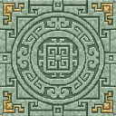
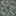
34 张方块材质统一为真正的 16×16、每张不超过 10 色。宫廷砖沿用已确认的 7 色样稿。只修改 Dynasty 方块；护甲、饰品、原版方块、存档及建筑没有改动。
这是素材与程序模型预览，不是游戏截图。本轮尚未同步到正在运行的实例。
| 方块与形状 | 右键消耗 → 作用 |
|---|---|
| 制革架 · 薄架与双脚 | 腐肉×8＋骨粉×2 → 皮革×2 |
| 药浴盆 · 低矮空心盆 | 小麦×4＋糖×2＋海带×2 → 解毒、5秒生命恢复I |
| 琢玉台 · 四脚矮桌 | 紫水晶碎片×4＋石英×4 → 玉×1 |
| 御火盆 · 四脚空心铜盆 | 木炭×2＋烈焰粉×1 → 2分钟抗火I |
新增四种和原有四种工坊统一为可朝向摆放、模型与实际碰撞一致。材料放背包，潜行右键查看说明；缺材料不扣除。药浴和御火冷却30秒，其余新加工冷却1秒。
查看八种工坊模型 · 验证与交付说明 · 完整 imagegen 提示词 · 100 个模组参考审阅


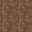
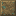
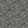
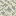
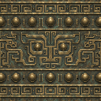
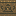
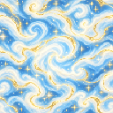

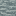
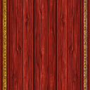
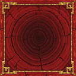
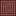
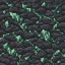

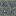
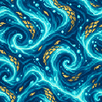
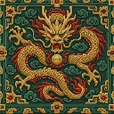
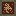

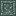
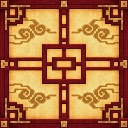
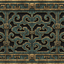
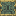

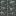

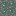
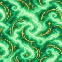
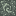

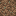

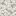

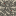
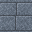


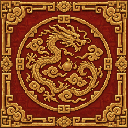
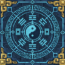
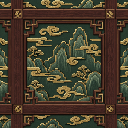
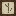

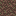

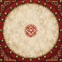
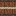
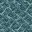
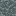

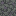

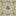